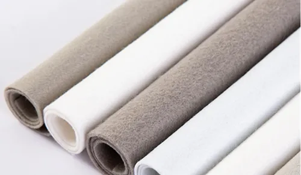

-
GEMINI NONWOVEN TECHNOLOGY is a leading manufacturer of nonwoven machinery in China with over decade professional experience in the field. Our company specializes in manufacturing nonwoven machines and providing comprehensive nonwoven production solutions, relevant supporting equipment and excellent services for users worldwide. Our nonwoven machines cover various nonwoven production processes, with needle punching, thermal bonding, and chemical bonding being the featured categories. Machines applications involves geotextiles, thermal bonded wadding, nonwoven felt, carpets, automotive interior felt, synthetic leather and asphalt felt substrate, filter media, spanning across different industries. We offer personalized solutions, flexibly configuring production lines according to customer needs to meet the diverse requirements of customers in different countries and industries.
Learn More


Nonwovens involve in diversity of technical and functional applications
Gemini Nonwoven Technology is committed to providing clients with the innovative solutions to fulfill global market trends and variable demands. Should you want our team to tailor the need, please allow us to do this.